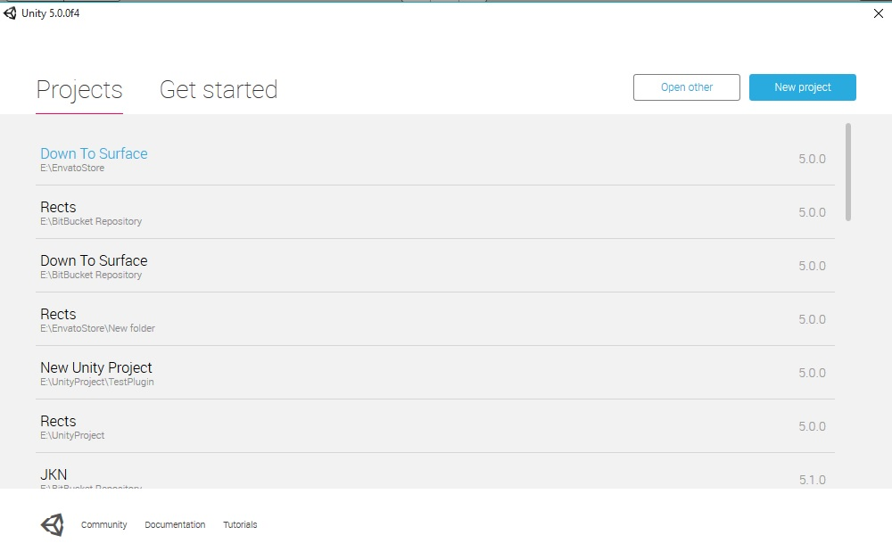

Down! Game Starter Kits
Documentation
- created: 09/12/2015
- latest update: 09/13/2015
- by: Damar Indra
- email: damarind@gmail.com
Requirement and Instalation
Requirement :
- Unity3D 5.2 Above (Download)
Instalation :
Import :
In this tutorial I'm using Windows 10 and Unity3D 5.0, but it should be similar with Mac user. Once you've download the zip file > extract file > open Unity

Click Open Other > choose project directory that you've extracted

Done
Board Manager
Board Manager is using for initiate land and obstacle. You can adding more obstacle with this script. See at Inspector and you can setup board as you wish.
Adding More Character
Create your Character Prefab
- Go to Assets > Resources > Prefabs > Player
- Drag and drop Bird to hierarchy / scene
- Expand the Bird on hierarchy until you found Renderer > bird
- Delete bird
- Change with your own model, Just drag and drop your model to Bird > Renderer
- Make sure your model is on top of child Renderer. The order is Bird > Renderer > your model, Raycaster, Collider
- Make sure the rotation of your model is right. Basically the rotation is (0, 90, 0).
- Change the name, Click Bird > press F2 or see at Inspector > change the name
- Then save the prefab, Drag your prefabs you've just create to Assets > Resources > Prefabs > Player
How to adding to game?
- Go to hierarchy > CharacterSelection > see at Inspector > Now you found Showcase (Script)
- On Showcase you can see Character Prefabs and Price Character
- Change the size of array
- Drag and Drop your Prefab to Character Prefabs and then set the price. Setting price each character must same as index array of CharacterPrefabs
- Done
Ads
To change the ID ads with your ID ads, open scene Splash, See at hierarchy > Configuration, then click it and see at Inspector.

You can found Admob Banner Key, Admob Interstitial Key, Interstitial Show Per Game. Interstitial Show Per Game is used for Showing Intersititial Ads, if you give it 3, Interstitial will show after 3 games.
Achievement and Leaderboard
To change the IDs Leaderboard and IDs Achievement, open scene Splash, See at hierarchy > Configuration, then click it and see at Inspector.
Now Change with your own IDs.
Usefull Variable, Class
This is the list of Usefull Variable and Class
- Delete Game (Variable) > Using for delete save games (You can found it on GameManager)
- Game (Class) > your game progress temporary saved in this class, you can found all variable like coins, highscore, etc. The game will be saved in PlayerPrefs.